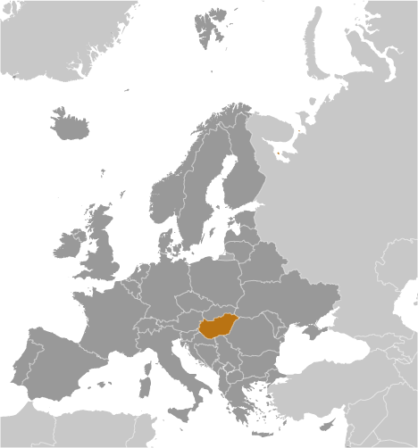
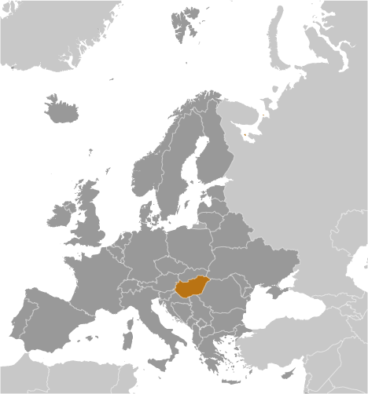

Europe :: HUNGARY
Introduction :: HUNGARY
-
Hungary became a Christian kingdom in A.D. 1000 and for many centuries served as a bulwark against Ottoman Turkish expansion in Europe. The kingdom eventually became part of the polyglot Austro-Hungarian Empire, which collapsed during World War I. The country fell under communist rule following World War II. In 1956, a revolt and an announced withdrawal from the Warsaw Pact were met with a massive military intervention by Moscow. Under the leadership of Janos KADAR in 1968, Hungary began liberalizing its economy, introducing so-called "Goulash Communism." Hungary held its first multiparty elections in 1990 and initiated a free market economy. It joined NATO in 1999 and the EU five years later.
Geography :: HUNGARY
-
Central Europe, northwest of Romania47 00 N, 20 00 EEuropetotal: 93,028 sq kmland: 89,608 sq kmwater: 3,420 sq kmcountry comparison to the world: 111slightly smaller than Virginia; about the same size as Indianatotal: 2,106 kmborder countries (7): Austria 321 km, Croatia 348 km, Romania 424 km, Serbia 164 km, Slovakia 627 km, Slovenia 94 km, Ukraine 128 km0 km (landlocked)none (landlocked)temperate; cold, cloudy, humid winters; warm summersmostly flat to rolling plains; hills and low mountains on the Slovakian bordermean elevation: 143 melevation extremes: lowest point: Tisza River 78 mhighest point: Kekes 1,014 mbauxite, coal, natural gas, fertile soils, arable landagricultural land: 58.9%arable land 48.5%; permanent crops 2%; permanent pasture 8.4%forest: 22.5%other: 18.6% (2011 est.)1,721 sq km (2012)a fairly even distribution throughout most of the country, with urban areas attracting larger and denser populationsthe upgrading of Hungary's standards in waste management, energy efficiency, and air, soil, and water pollution to meet EU requirements will require large investmentsparty to: Air Pollution, Air Pollution-Nitrogen Oxides, Air Pollution-Persistent Organic Pollutants, Air Pollution-Sulfur 85, Air Pollution-Sulfur 94, Air Pollution-Volatile Organic Compounds, Antarctic Treaty, Biodiversity, Climate Change, Climate Change-Kyoto Protocol, Desertification, Endangered Species, Environmental Modification, Hazardous Wastes, Law of the Sea, Marine Dumping, Ozone Layer Protection, Ship Pollution, Wetlands, Whalingsigned, but not ratified: none of the selected agreementslandlocked; strategic location astride main land routes between Western Europe and Balkan Peninsula as well as between Ukraine and Mediterranean basin; the north-south flowing Duna (Danube) and Tisza Rivers divide the country into three large regions
People and Society :: HUNGARY
-
9,850,845 (July 2017 est.)country comparison to the world: 92noun: Hungarian(s)adjective: HungarianHungarian 85.6%, Romani 3.2%, German 1.9%, other 2.6%, unspecified 14.1% (2011 est.)note: percentages add up to more than 100% because respondents were able to identify more than one ethnic group; Romani populations are usually underestimated in official statistics and may represent 5–10% of Hungary's populationHungarian (official) 99.6%, English 16%, German 11.2%, Russian 1.6%, Romanian 1.3%, French 1.2%, other 4.2%note: shares sum to more than 100% because some respondents gave more than one answer on the census; Hungarian is the mother tongue of 98.9% of Hungarian speakers (2011 est.)Roman Catholic 37.2%, Calvinist 11.6%, Lutheran 2.2%, Greek Catholic 1.8%, other 1.9%, none 18.2%, unspecified 27.2% (2011 est.)0-14 years: 14.71% (male 746,043/female 702,792)15-24 years: 10.96% (male 557,655/female 522,324)25-54 years: 41.88% (male 2,075,101/female 2,050,478)55-64 years: 13.4% (male 608,734/female 711,602)65 years and over: 19.05% (male 708,214/female 1,167,902) (2017 est.)total dependency ratio: 46.9youth dependency ratio: 21.2elderly dependency ratio: 25.7potential support ratio: 3.9 (2015 est.)total: 42.3 yearsmale: 40.4 yearsfemale: 44.3 years (2017 est.)country comparison to the world: 31-0.25% (2017 est.)country comparison to the world: 2159 births/1,000 population (2017 est.)country comparison to the world: 20512.8 deaths/1,000 population (2017 est.)country comparison to the world: 161.3 migrant(s)/1,000 population (2017 est.)country comparison to the world: 55a fairly even distribution throughout most of the country, with urban areas attracting larger and denser populationsurban population: 72.1% of total population (2017)rate of urbanization: 0.36% annual rate of change (2015-20 est.)BUDAPEST (capital) 1.714 million (2015)at birth: 1.06 male(s)/female0-14 years: 1.06 male(s)/female15-24 years: 1.07 male(s)/female25-54 years: 1.01 male(s)/female55-64 years: 0.85 male(s)/female65 years and over: 0.6 male(s)/femaletotal population: 0.91 male(s)/female (2016 est.)28.3 years (2014 est.)17 deaths/100,000 live births (2015 est.)country comparison to the world: 131total: 4.9 deaths/1,000 live birthsmale: 5.2 deaths/1,000 live birthsfemale: 4.6 deaths/1,000 live births (2017 est.)country comparison to the world: 177total population: 76.1 yearsmale: 72.4 yearsfemale: 80 years (2017 est.)country comparison to the world: 911.45 children born/woman (2017 est.)country comparison to the world: 2047.4% of GDP (2014)country comparison to the world: 703.32 physicians/1,000 population (2014)7.2 beds/1,000 population (2011)improved:urban: 100% of populationrural: 100% of populationtotal: 100% of populationunimproved:urban: 0% of populationrural: 0% of populationtotal: 0% of population (2015 est.)improved:urban: 97.8% of populationrural: 98.6% of populationtotal: 98% of populationunimproved:urban: 2.2% of populationrural: 1.4% of populationtotal: 2% of population (2015 est.)NANANAdegree of risk: intermediatevectorborne diseases: tickborne encephalitis (2016)26.4% (2016)country comparison to the world: 424.2% of GDP (2013)country comparison to the world: 81definition: age 15 and over can read and writetotal population: 99.1%male: 99.1%female: 99% (2015 est.)total: 15 yearsmale: 15 yearsfemale: 16 years (2015)total: 17.3%male: 18.3%female: 16% (2015 est.)country comparison to the world: 31
Government :: HUNGARY
-
conventional long form: noneconventional short form: Hungarylocal long form: nonelocal short form: Magyarorszagetymology: the Byzantine Greeks refered to the tribes that arrived on the steppes of Eastern Europe in the 9th century as the "Oungroi," a name that was later Latinized to "Ungri" and which became "Hungari"; the name originally meant an "[alliance of] ten tribes"; the Hungarian name "Magyarorszag" means "Country of the Magyars"; the term may derive from the most prominent of the Hungarian tribes, the Megyerparliamentary republicname: Budapestgeographic coordinates: 47 30 N, 19 05 Etime difference: UTC+1 (6 hours ahead of Washington, DC, during Standard Time)daylight saving time: +1hr, begins last Sunday in March; ends last Sunday in October19 counties (megyek, singular - megye), 23 cities with county rights (megyei jogu varosok, singular - megyei jogu varos), and 1 capital city (fovaros)counties: Bacs-Kiskun, Baranya, Bekes, Borsod-Abauj-Zemplen, Csongrad, Fejer, Gyor-Moson-Sopron, Hajdu-Bihar, Heves, Jasz-Nagykun-Szolnok, Komarom-Esztergom, Nograd, Pest, Somogy, Szabolcs-Szatmar-Bereg, Tolna, Vas, Veszprem, Zalacities with county rights: Bekescsaba, Debrecen, Dunaujvaros, Eger, Erd, Gyor, Hodmezovasarhely, Kaposvar, Kecskemet, Miskolc, Nagykanizsa, Nyiregyhaza, Pecs, Salgotarjan, Sopron, Szeged, Szekesfehervar, Szekszard, Szolnok, Szombathely, Tatabanya, Veszprem, Zalaegerszegcapital city: Budapest16 November 1918 (republic proclaimed); notable earlier dates: 25 December 1000 (crowning of King STEPHEN I, traditional founding date); 30 March 1867 (Austro-Hungarian dual monarchy established)Saint Stephen's Day, 20 August (1083); note - commemorates his cannonization and the transfer of his remains to Buda (now Budapest) in 1083history: previous 1949 (heavily amended in 1989 following the collapse of communism); latest approved 18 April 2011, signed 25 April 2011, effective 1 January 2012amendments: proposed by the president of the republic, by the government, by parliamentary committee, or by Parliament members; passage requires two-thirds majority vote of Parliament members and approval by the president; amended several times, last in 2013 (2016)civil legal system influenced by the German modelaccepts compulsory ICJ jurisdiction with reservations; accepts ICCt jurisdictioncitizenship by birth: nocitizenship by descent only: at least one parent must be a citizen of Hungarydual citizenship recognized: yesresidency requirement for naturalization: 8 years18 years of age, 16 if married and marriage registered in Hungary; universalchief of state: Janos ADER (since 10 May 2012)head of government: Prime Minister Viktor ORBAN (since 29 May 2010)cabinet: Cabinet of Ministers proposed by the prime minister and appointed by the presidentelections/appointments: president indirectly elected by the National Assembly with two-thirds majority vote in first round or simple majority vote in second round for a 5-year term (eligible for a second term); election last held on 13 March 2017 (next to be held by spring 2022); prime minister elected by the National Assembly on the recommendation of the presidentelection results: Janos ADER (Fidesz) reelected president; National Assembly vote - 131 to 39; Viktor ORBAN (Fidesz) reelected prime minister; National Assembly vote - 130 to 57description: unicameral National Assembly or Orszaggyules (199 seats; 106 members directly elected in single-member constituencies by simple majority vote and 93 members directly elected in a single nationwide constituency by party list proportional representation vote; members serve 4-year terms)elections: last held on 6 April 2014 (next to be held by April 2018)election results: percent of vote by party - Fidesz-KDNP 66.8%, Unity 19.1%, Jobbik 11.6%, LMP 2.5%; seats by party - Fidesz-KDNP 133, Unity 38, Jobbik 23, LMP 5highest court(s): Curia or Supreme Judicial Court (consists of the president, vice president, 5 department heads, and approximately 76 judges and is organized into civil, criminal, economic, and administrative-labor departments; Constitutional Court (consists of 15 judges including the court president)judge selection and term of office: Curia president elected from among its members for 9 years by the National Assembly on the recommendation of the president of the republic; other Curia judges appointed by the president upon the recommendation of the National Judicial Council, a separate 15-member administrative body; judge tenure based on interim evaluations until normal retirement age; Constitutional Court judges elected by two-thirds vote of the National Assembly; members serve single renewable 12-year terms with mandatory retirement at age 70subordinate courts: 5 regional courts of appeal; 19 regional or county courts (including Budapest Metropolitan Court); 20 administrative and labor courts; 111 district or local courtsChristian Democratic People's Party or KDNP [Zsolt SEMJEN]Democratic Coalition or DK [Ferenc GYURCSANY]Dialogue for Hungary or PM [Javor BENEDEK, Timea SZABO]Fidesz-Hungarian Civic Alliance or Fidesz [Viktor ORBAN]Hungarian Liberal Party or MLP [Gabor FODOR]Hungarian Socialist Party or MSZP [Gyula MOLNAR]Movement for a Better Hungary or Jobbik [Gabor VONA]Politics Can Be Different or LMP [Bernadett SZEL, Akos HADHAZI]Together 2014 or Egyutt or E14 [Peter JUHASZ, Viktor SZIGETVARI]Unity (electoral coalition of MSZP, E14, DK, PM, MLP)Civil Osszefogas Forum ("Civil Unity Forum," nominally independent organization that serves as the steering committee for the pro-government mass organization Bekemenet (Peace March), supporting ORBAN government's policies)Hungarian Civil Liberties Union (Tarsasag a Szabadsagjogokert) or TASZ (freedom of expression, information privacy)Hungarian Helsinki Committee (asylum seekers' rights, human rights in law enforcement and the judicial system)MigSzol (Migrant Solidarity Group of Hungary) (independent advocacy group on migration crisis)MostMi ("Now Us") [Bori TAKACS](Facebook group that was a major participant at anti-government demonstrations in late 2014-early 2015; pro-Europe, anti-establishment movement that blames Fidesz for the state of the country but also blames all established political parties for perceived political and economic failures since the fall of communism)Okotars (empowerment of civil society in Hungary)other: Energy Club (Energia Klub)Greenpeace Hungary (Greenpeace Magyarorszag)Australia Group, BIS, CD, CE, CEI, CERN, EAPC, EBRD, ECB, EIB, ESA (cooperating state), EU, FAO, G-9, IAEA, IBRD, ICAO, ICC (national committees), ICCt, ICRM, IDA, IEA, IFAD, IFC, IFRCS, ILO, IMF, IMO, IMSO, Interpol, IOC, IOM, IPU, ISO, ITSO, ITU, ITUC (NGOs), MIGA, MINURSO, NATO, NEA, NSG, OAS (observer), OECD, OIF (observer), OPCW, OSCE, PCA, Schengen Convention, SELEC, UN, UNCTAD, UNESCO, UNFICYP, UNHCR, UNIDO, UNIFIL, UNWTO, UPU, WCO, WFTU (NGOs), WHO, WIPO, WMO, WTO, ZCchief of mission: Ambassador Laszlo SZABO (since 8 September 2017)chancery: 3910 Shoemaker Street NW, Washington, DC 20008telephone: [1] (202) 362-6730FAX: [1] (202) 966-8135consulate(s) general: Los Angeles, New Yorkconsulate(s): Bostonchief of mission: Ambassador (vacant); Charge d’Affaires David KOSTELANCIK (since 20 January 2017)embassy: Szabadsag ter 12, H-1054 Budapestmailing address: pouch: American Embassy Budapest, 5270 Budapest Place, US Department of State, Washington, DC 20521-5270telephone: [36] (1) 475-4400FAX: [36] (1) 475-4248three equal horizontal bands of red (top), white, and green; the flag dates to the national movement of the 18th and 19th centuries, and fuses the medieval colors of the Hungarian coat of arms with the revolutionary tricolor form of the French flag; folklore attributes virtues to the colors: red for strength, white for faithfulness, and green for hope; alternatively, the red is seen as being for the blood spilled in defense of the land, white for freedom, and green for the pasturelands that make up so much of the countryHoly Crown of Hungary (Crown of Saint Stephen); national colors: red, white, greenname: "Himnusz" (Hymn)lyrics/music: Ferenc KOLCSEY/Ferenc ERKELnote: adopted 1844
Economy :: HUNGARY
-
Hungary has transitioned from a centrally planned to a market-driven economy with a per capita income nearly two-thirds that of the EU-28 average; however, in recent years the government has become more involved in managing the economy. Budapest has implemented unorthodox economic policies to boost household consumption and has relied on EU-funded development projects to generate growth.The economy is largely driven by exports, making it vulnerable to external market shocks. Following the fall of communism in 1990, Hungary experienced a drop-off in exports and financial assistance from the former Soviet Union. Hungary embarked on a series of economic reforms, including privatization of state-owned enterprises and reduction of social spending programs, to shift from a centrally planned to a market-driven economy, and to reorient its economy towards trade with the West. These efforts helped to spur growth, attract investment, and reduce Hungary’s debt burden and fiscal deficits. However, living conditions for the average Hungarian initially deteriorated as inflation increased and unemployment reached double digits. Conditions slowly improved over the 1990s as the reforms came to fruition and export growth accelerated. Economic policies instituted during that decade helped position Hungary to join the European Union in 2004; Hungary has yet to join the euro-zone, however. Hungary suffered a historic economic contraction as a result of the global economic slowdown in 2008-09 as export demand and domestic consumption dropped, prompting it to take an IMF-EU financial assistance package.Since 2010, the government has backpedalled on reforms and taken a more nationalist and populist approach towards economic management. The government has favored national industries, and specifically government-linked businesses, through legislation, regulation, and public procurements. In 2010 and 2012, the government increased taxes on foreign-dominated sectors, such as banking and retail, because the move helped to raise revenues and decrease the budget deficit, thereby allowing Hungary to maintain access to EU development funds. The policy deterred private investment, however. In 2011 and 2014, Hungary nationalized private pension funds. The move squeezed financial service providers out of the system, but it also helped Hungary curb its public debt and lower its budget deficit to below 3% of GDP, as subsequent pension contributions have been channeled into the state-managed pension fund. Hungary’s public debt (at 73.9% of GDP) is still high compared to EU peers in Central Europe. Despite these reversals, real GDP growth has remained robust in the past several years because EU cyclical funding increased, EU demand for Hungarian exports rose, and domestic household consumption rebounded. To further boost household consumption ahead of an anticipated 2018 election, the government has announced plans to increase the minimum wage and public sector salaries, to decrease taxes on foodstuffs and services, to decrease personal income tax from 16% to 15%, as well as to introduce a uniform 9% business tax for both small and medium enterprises and large companies. Real GDP growth slowed in 2016 due to a cyclical fallback in EU funds, but is expected to increase to above 3% in 2017 and 2018.Systemic economic challenges include long-term and youth unemployment, labor shortages, widespread poverty in rural areas, vulnerabilities to changes in demand for exports, and a heavy reliance on Russian energy imports.$270.1 billion (2016 est.)$261.6 billion (2015 est.)$250.9 billion (2014 est.)note: data are in 2016 dollarscountry comparison to the world: 61$124.4 billion (2016 est.)2% (2016 est.)3.1% (2015 est.)4% (2014 est.)country comparison to the world: 137$27,500 (2016 est.)$26,900 (2015 est.)$26,000 (2014 est.)note: data are in 2016 dollarscountry comparison to the world: 6924.5% of GDP (2016 est.)25.1% of GDP (2015 est.)24.9% of GDP (2014 est.)country comparison to the world: 58household consumption: 50.4%government consumption: 20.2%investment in fixed capital: 17.9%investment in inventories: 1.1%exports of goods and services: 92.6%imports of goods and services: -82.3% (2016 est.)agriculture: 4.5%industry: 30.4%services: 65.1% (2016 est.)wheat, corn, sunflower seed, potatoes, sugar beets; pigs, cattle, poultry, dairy productsmining, metallurgy, construction materials, processed foods, textiles, chemicals (especially pharmaceuticals), motor vehicles-1.8% (2016 est.)country comparison to the world: 1764.586 million (2016 est.)country comparison to the world: 89agriculture: 4.9%industry: 30.3%services: 64.5% (2015)5.1% (2016 est.)6.8% (2015 est.)country comparison to the world: 6914.9% (2015 est.)lowest 10%: 3.3%highest 10%: 22.4% (2015)28.2 (2015 est.)28.6 (2014)country comparison to the world: 133revenues: $56.73 billionexpenditures: $59.03 billion (2016 est.)45.1% of GDP (2016 est.)country comparison to the world: 22-1.8% of GDPnote: Hungary has been under the EU Excessive Deficit Procedure since it joined the EU in 2004; in March 2012 the EU elevated its Excessive Deficit Procedure against Hungary and proposed freezing 30% of the country's Cohesion Funds because 2011 deficit reductions were not achieved in a sustainable manner; in June 2012, the EU lifted the freeze, recognizing that steps had been taken to reduce the deficit; the Hungarian deficit increased above 3% both in 2013 and in 2014 due to sluggish growth and the government's fiscal tightening (2016 est.)country comparison to the world: 8274.1% of GDP (2016 est.)74.8% of GDP (2015 est.)note: general government gross debt is defined in the Maastricht Treaty as consolidated general government gross debt at nominal value, outstanding at the end of the year in the following categories of government liabilities: currency and deposits, securities other than shares excluding financial derivatives, and government, state government, local government, and social security funds.country comparison to the world: 44calendar year0.4% (2016 est.)-0.1% (2015 est.)country comparison to the world: 630.9% (31 December 2016)1.35% (31 December 2015)country comparison to the world: 1292.09% (31 December 2016 est.)2.9% (31 December 2015 est.)country comparison to the world: 176$55.64 billion (31 December 2016 est.)$46.14 billion (31 December 2015 est.)country comparison to the world: 50$69.25 billion (31 December 2016 est.)$64.74 billion (31 December 2015 est.)country comparison to the world: 61$70.11 billion (31 December 2016 est.)$69.85 billion (31 December 2015 est.)country comparison to the world: 60$21.59 billion (31 December 2016 est.)$17.69 billion (31 December 2015 est.)$14.51 billion (31 December 2014 est.)country comparison to the world: 64$6.797 billion (2016 est.)$3.986 billion (2015 est.)country comparison to the world: 25$91.6 billion (2016 est.)$88.32 billion (2015 est.)country comparison to the world: 36machinery and equipment 53.4%, other manufactures 31.2%, food products 8.4%, raw materials 3.4%, fuels and electricity 3.9% (2012 est.)Germany 28.2%, Romania 5.2%, Slovakia 5%, Austria 4.9%, France 4.8%, Italy 4.8%, Czech Republic 4.2%, Poland 4.2% (2016)$85.78 billion (2016 est.)$83.43 billion (2015 est.)country comparison to the world: 36machinery and equipment 45.4%, other manufactures 34.3%, fuels and electricity 12.6%, food products 5.3%, raw materials 2.5% (2012)Germany 26.3%, Austria 6.4%, China 6.3%, Poland 5.5%, Slovakia 5.3%, Netherlands 4.9%, Czech Republic 4.9%, France 4.8%, Italy 4.8% (2016)$25.82 billion (31 December 2016 est.)$33.12 billion (31 December 2015 est.)country comparison to the world: 52$131.3 billion (31 December 2016 est.)$127.4 billion (31 December 2015 est.)country comparison to the world: 44$298.2 billion (31 December 2016 est.)$232.3 billion (31 December 2015 est.)country comparison to the world: 22$222.6 billion (31 December 2016 est.)$159.8 billion (31 December 2015 est.)country comparison to the world: 25forints (HUF) per US dollar -287.7 (2016 est.)279.33 (2015 est.)279.33 (2014 est.)232.6 (2013 est.)225.1 (2012 est.)
Energy :: HUNGARY
-
electrification - total population: 100% (2016)28.67 billion kWh (2015 est.)country comparison to the world: 6638.66 billion kWh (2015 est.)country comparison to the world: 585.24 billion kWh (2016 est.)country comparison to the world: 3517.95 billion kWh (2016 est.)country comparison to the world: 138.468 million kW (2015 est.)country comparison to the world: 6864.5% of total installed capacity (2015 est.)country comparison to the world: 11522.3% of total installed capacity (2015 est.)country comparison to the world: 70.7% of total installed capacity (2015 est.)country comparison to the world: 14814.1% of total installed capacity (2015 est.)country comparison to the world: 5213,830 bbl/day (2016 est.)country comparison to the world: 771,042 bbl/day (2016 est.)country comparison to the world: 72120,400 bbl/day (2016 est.)country comparison to the world: 4125.1 million bbl (1 January 2017 es)country comparison to the world: 85156,100 bbl/day (2016 est.)country comparison to the world: 58157,200 bbl/day (2016 est.)country comparison to the world: 6750,510 bbl/day (2016 est.)country comparison to the world: 5367,860 bbl/day (2016 est.)country comparison to the world: 701.772 billion cu m (2015 est.)country comparison to the world: 6017.14 billion cu m (2015 est.)country comparison to the world: 47545 million cu m (2015 est.)country comparison to the world: 426.79 billion cu m (2015 est.)country comparison to the world: 317.702 billion cu m (1 January 2017 es)country comparison to the world: 8744.2 million Mt (2015 est.)country comparison to the world: 64
Communications :: HUNGARY
-
total subscriptions: 3,119,735subscriptions per 100 inhabitants: 32 (July 2016 est.)country comparison to the world: 49total: 11,779,908subscriptions per 100 inhabitants: 119 (July 2016 est.)country comparison to the world: 78general assessment: modern telephone system is digital and highly automated; trunk services are carried by fiber-optic cable and digital microwave radio relaydomestic: competition among mobile-cellular service providers has led to a sharp increase in the use of mobile-cellular phones since 2000 and a decrease in the number of fixed-line connectionsinternational: country code - 36; Hungary has fiber-optic cable connections with all neighboring countries; the international switch is in Budapest; satellite earth stations - 2 Intelsat (Atlantic Ocean and Indian Ocean regions), 1 Inmarsat, 1 very small aperture terminal (VSAT) system of ground terminals (2015)mixed system of state-supported public service broadcast media and private broadcasters; the 5 publicly owned TV channels and the 2 main privately owned TV stations are the major national broadcasters; a large number of special interest channels; highly developed market for satellite and cable TV services with about two-thirds of viewers utilizing their services; 4 state-supported public-service radio networks; a large number of local stations including commercial, public service, nonprofit, and community radio stations; digital transition completed at the end of 2013; government-linked businesses have greatly consolidated ownership in broadcast and print media (2016).hutotal: 7,826,695percent of population: 79.3% (July 2016 est.)country comparison to the world: 50
Transportation :: HUNGARY
-
number of registered air carriers: 5inventory of registered aircraft operated by air carriers: 75annual passenger traffic on registered air carriers: 20,042,185annual freight traffic on registered air carriers: 0 mt-km (2015)HA (2016)41 (2013)country comparison to the world: 104total: 20over 3,047 m: 22,438 to 3,047 m: 61,524 to 2,437 m: 6914 to 1,523 m: 5under 914 m: 1 (2017)total: 211,524 to 2,437 m: 2914 to 1,523 m: 8under 914 m: 11 (2013)3 (2013)gas (high-pressure transmission system) 5,873 km; gas (low-pressure distribution network) 83,619 km (2015); oil 850 km; refined products 1,200 km (2016)total: 8,049 kmbroad gauge: 36 km 1.524-m gaugestandard gauge: 7,794 km 1.435-m gauge (2,889 km electrified)narrow gauge: 219 km 0.760-m gauge (2014)country comparison to the world: 28total: 203,601 kmpaved: 77,087 km (includes 1,582 km of expressways)unpaved: 126,514 km (2014)country comparison to the world: 261,622 km (most on Danube River) (2011)country comparison to the world: 47river port(s): Baja, Csepel (Budapest), Dunaujvaros, Gyor-Gonyu, Mohacs (Danube)
Military and Security :: HUNGARY
-
1.01% of GDP (2016)0.93% of GDP (2015)0.87% of GDP (2014)0.95% of GDP (2013)1.04% of GDP (2012)country comparison to the world: 113Hungarian Defense Forces: Land Forces, Hungarian Air Force (Magyar Legiero, ML) (2011)18-25 years of age for voluntary military service; no conscription; 6-month service obligation (2012)
Transnational Issues :: HUNGARY
-
bilateral government, legal, technical and economic working group negotiations continue in 2006 with Slovakia over Hungary's failure to complete its portion of the Gabcikovo-Nagymaros hydroelectric dam project along the Danube; as a member state that forms part of the EU's external border, Hungary has implemented the strict Schengen border rulesrefugees (countries of origin): 5,950 applicants for forms of legal stay other than asylum (Ukraine) (2015)stateless persons: 135 (2016)note: 432,282 estimated refugee and migrant arrivals (January 2015 - November 2017); Hungary is predominantly a transit country and hosts fewer than 600 migrants and asylum seekers as of September 2017transshipment point for Southwest Asian heroin and cannabis and for South American cocaine destined for Western Europe; limited producer of precursor chemicals, particularly for amphetamine and methamphetamine; efforts to counter money laundering, related to organized crime and drug trafficking are improving but remain vulnerable; significant consumer of ecstasy